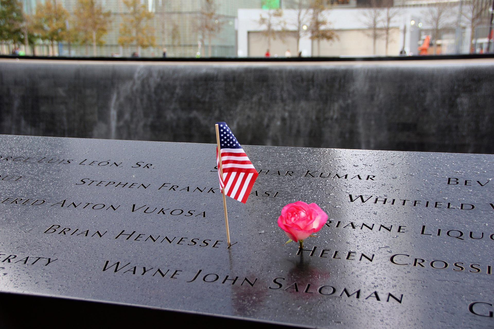
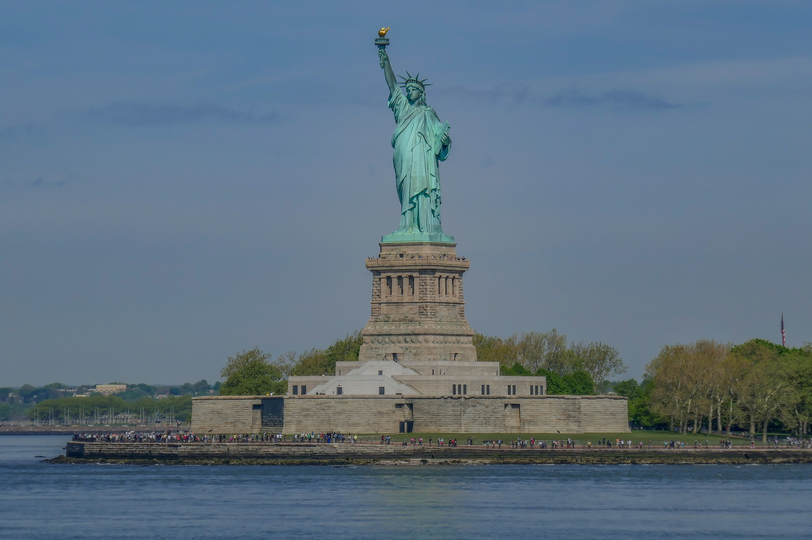
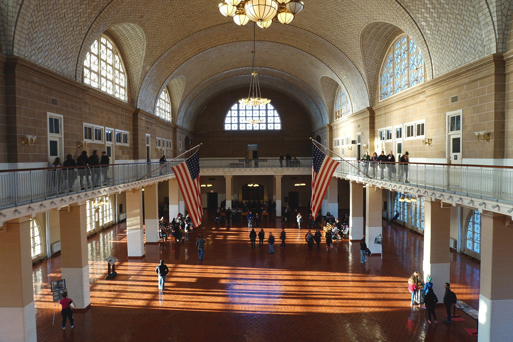

Places to See in NYC
Museums

The 9/11 Memorial Museum is a tribute to honor the nearly 3,000 people
who lost their lives in the terror attacks on September 11, 2001.
The names are inscribed on the edge of the memorial pools and the museum
contains personal stories.

The Met is the largest art museum in the US. In addition to
inspirational works of art, rare treasures from all over the world are
on display. There are three sites: The Met Fifth Avenue,
The Met Breuer and The Met Cloisters.

The American Museum of Natural History contains 45 exhibition halls and 28
buildings. In addition, it houses a planetarium and library.
It is one of the largest museums in the world.
Landmarks

The Statue of Liberty is a symbol of freedom to people throughout
the world. There is an exhibit in the pedestal depicting the history of
Lady Liberty. Access to the crown is only allowed by advanced reservation.

Ellis Island was the first port of entry into the US for about
12 million immigrants. The museum shares the experiences of people
who have taken the journey.
Empire State Building

The Empire State Building's Observatory boasts spectacular indoor
and outdoor 360 degree views. It has 103 floors. The building is an
Art Deco masterpiece.